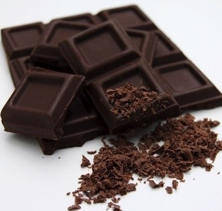
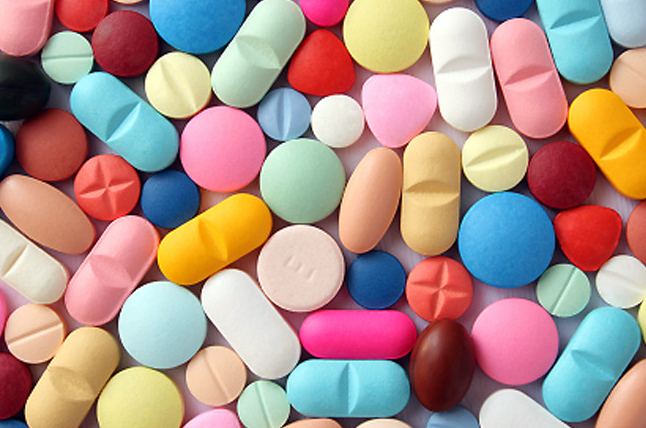
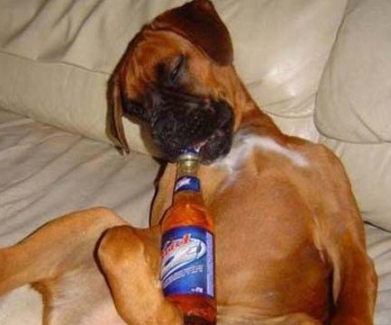

강아지에게 해로운 음식
|  | 1. 초콜릿,커피,차,다른 카페인 |
|---|---|
| 심장과 신경계에 중독을 일으키는 카페인, 이뇨제, 테오브로민이 들어있으므로 조심해야 합니다. 강아지의 경우 이 성분들을 해독할 수 있는 능력이 없어 독성으로 작용되게 됩니다.특히 초콜릿 성분이 중추신경계를 자극해서 혈액순환을 방해할 수 있으며, 신장에도 악영향을 줄 수 있습니다. 섭취한 양이 많으면 많을수록 증상이 더 빨리 나타나고 , 또 심할 수 있습니다. 초콜릿을 먹은 강아지들은 구토나 설사 등을 할 수 있고, 체온이 상승하거나 심장박동수가 증가되게 됩니다. 심할 경우 사망에 이를 수 있으니 절대 위의 음식들은 강아지가 먹지 못하도록 유의해야 합니다. | |
|  | 2. 철성분이 많이 들어있는 사람의 비타민 |
| 사람의 비타민은 강아지 소화기에 손상을 입힐 수 있고 간과 신장에 중독성을 일으킬 수 있습니다. | |
|  | 3. 알코올(술) |
| 강아지들이 알코올(술)을 섭취하게 되면 취하게 되거나 혼수상태, 심하면 사망에까지 이를 수 있게 됩니다. 아이들의 체중이나 섭취한 음식의 양에 따라 위험도가 나뉘는데 작은 강아지가 많은 알코올을 섭취할수록 위험도가 커집니다.1kg의 강아지가 5~8ml 정도의 알코올을 섭취했을 때 몸에서 독성반응이 나타납니다.강아지가 알코올을 섭취할경우 사람이 취한것처럼 나른하고 무기력한 움직임을 보이는데요 대게 증상은 바로 나타나지 않고 3-4시간 후에 나타날 수도 있으며, 구토, 설사, 탈수등의 증상을 나타나거나 발작을 일으키기도 합니다. |